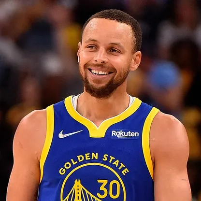
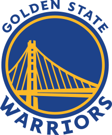
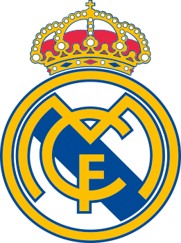
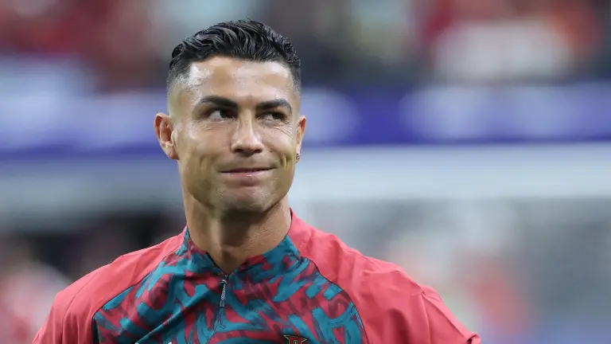

Hobbie

Más allá del deporte, una de las cosas que más disfruto hacer en mi tiempo libre es programar y dar vida a proyectos digitales. Me apasiona enfrentar retos lógicos, experimentar con HTML, CSS y JavaScript, y ver cómo una idea se transforma en una página web funcional. Para mí, programar es como resolver un rompecabezas donde la creatividad y la lógica van de la mano.
Baloncesto
-
Mi jugador favorito (Stephen Curry)
Me fascina el estilo de juego rápido y dinámico de los Warriors. Mi máxima inspiración en este deporte es Stephen Curry, admiro su mentalidad, su disciplina de trabajo inagotable y cómo revolucionó el básquet con su increíble tiro exterior y manejo de balón.

Stephen Curry celebrando un triple con los Warriors. -
Mi equipo (Golden State Warriors)
A nivel personal, soy un apasionado de los Golden State Warriors. No los sigo solo porque hayan ganado campeonatos, sino por su filosofía de juego y su mentalidad. Cambiaron por completo la historia del baloncesto con el juego en equipo, los triples imposibles y esa alegría que transmiten en la cancha. Sé que ahora mismo están pasando por una etapa de mucha transición, lesiones y un inicio de temporada complicadísimo. Pero para mí, ver a una leyenda como Stephen Curry seguir dándolo todo a sus 38 años es pura inspiración. Ser de los Warriors me ha enseñado que el éxito no es permanente, pero que la verdadera grandeza se demuestra en la capacidad de reinventarse y seguir compitiendo con orgullo, sin importar las dificultades.

Golden State Warriors -
Mejores Clips
Fútbol
-
Mi equipo favorito
Sigo de cerca al Real Madrid, un club que representa la grandeza, la historia y la exigencia de dar siempre el máximo. En cuanto a referentes, Cristiano Ronaldo es mi mayor inspiración debido a su disciplina, su mentalidad ultra competitiva y su constante superación.

Real Madrid -
Mi jugador favorito
A nivel personal, mi gran referente en el deporte es Cristiano Ronaldo. Lo que más admiro de él no es solo su talento natural, sino su ética de trabajo inquebrantable. Es un jugador que construyó su propio destino a base de disciplina, ambición y una mentalidad ganadora que no entiende de límites. Justo ahora que acaba de cerrar su histórica etapa con Portugal y que sigue anotando goles en el Al-Nassr rumbo a los 1,000 goles de por vida, CR7 nos deja una lección increíble. Me inspira porque demuestra que el talento sin esfuerzo no basta, y que para ser el mejor en lo tuyo tienes que estar dispuesto a trabajar más que el resto, a cuidar tu cuerpo y a mantener el hambre de éxito intacta, sin importar cuántos premios hayas ganado ya.

Cristiano Ronaldo - CR7 -
Mejores clips